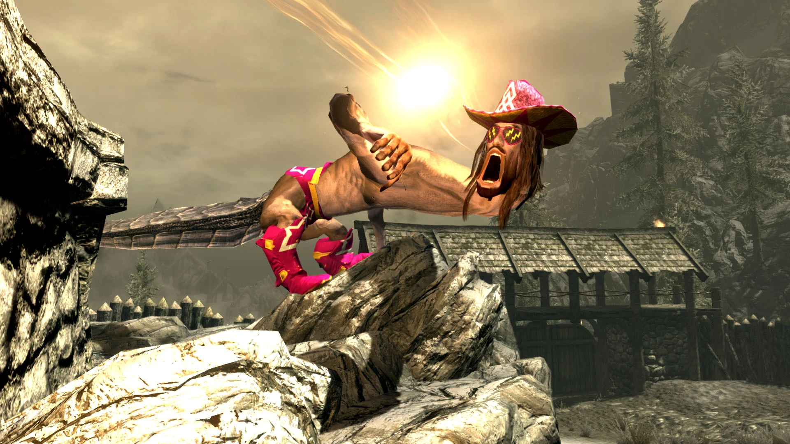
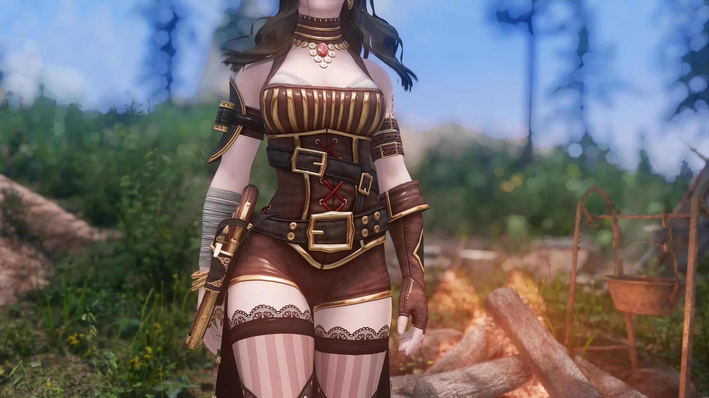
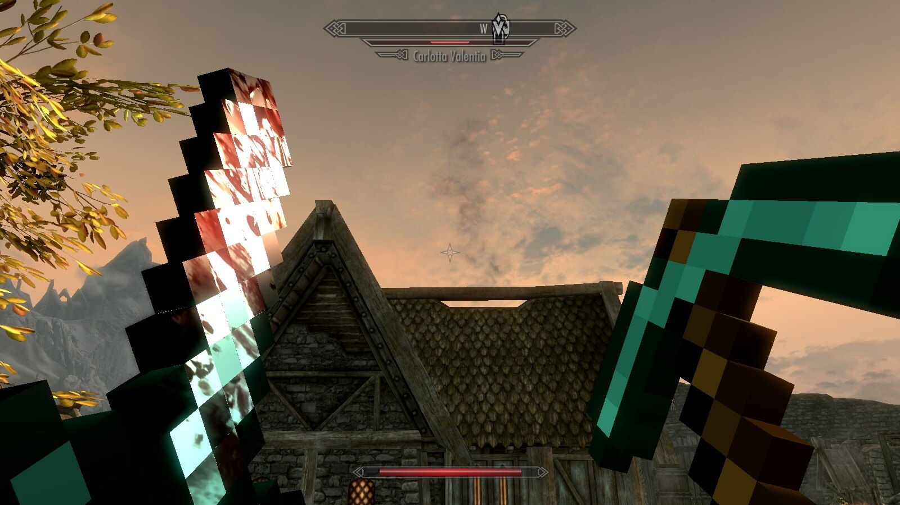
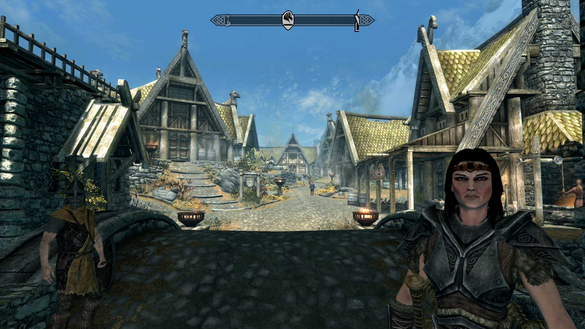
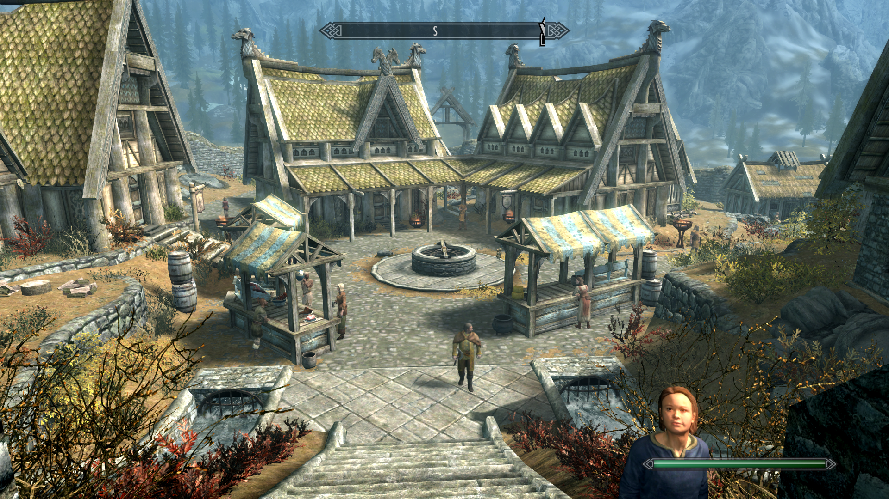

What I Play
My biggest preference is single-player RPGs like Fallout, Skyrim and The Witcher. I also like strategy games like Stellaris and Crusader Kings.
One of the things I like about these types of games is the ability to make-believe. I'm not the most imaginative person so I enjoy the temporary detachment from reality.
Modding
I once talked to a friend of mine and told him that my Skyrim is not like your Skyrim. He was playing Skyrim on the PlayStation 4 and I was playing on the Xbox One. The gall of me, to believe that my game had changed so drastically.
There's a mod for that
Now I play on PC where there are no limits.

If you want to turn dragons into your favourite wrestler.
There's a mod for that.

Do you wish women were more jiggly.
There's a mod for that.

Do you wish you were playing a different game, well you could play a different game.
...or there's a mod for that.
Fortunately or unfortunately depending on your opinion on the matter, my games usually remain more tame and faithful to the developer's vision.
What my game looks like

Before
 After
After

Before
 After
After
My CK2 Mod
The first time I created my own mod was in 2019, at the time I was playing Crusader Kings 2 and I decided to make it easier to cheat. Using a different mod I was able to read how bloodlines are created and then I created my own bloodlines mod. It took a lot of trial and error and usually didn't work but eventually, I had something I could use.
My Skyrim mod
In August 2023, I was frustrated because I couldn't find a patch that made two of my favourite mods work better together (Improved follower dialogue -Lydia and Bijin Warmaidens). Since I didn't want to get up either mod instead spent two days learning how to open ba files I learnt how to use x edit and how to use sseedit and created the IFD Lydia patch, two months after I made that patch the creator of ID created a similar page and killed my mod, kinda?
Check it out here